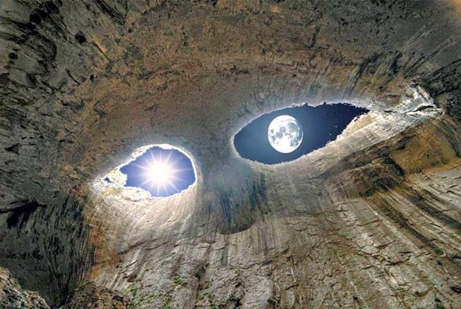

Пещера Проходна (Божиите очи).
Пещера Проходна е една от най-известните пещери в карстовия район край село Карлуково. Лесно достъпна е и е с най-дългия пещерен тунел в България
- дълъг 365 метра. Тя е естествено осветена, тъй като в средната й зала, поради ерозията, таванът е прояден от просмукващите се води, като образува феномена Очите на Бога -
две еднакви по големина дупки с формата на очи.
Проходна е една от малкото пещери в Европа, където е подходящо и се практикуват пещерни бънджи скокове.
